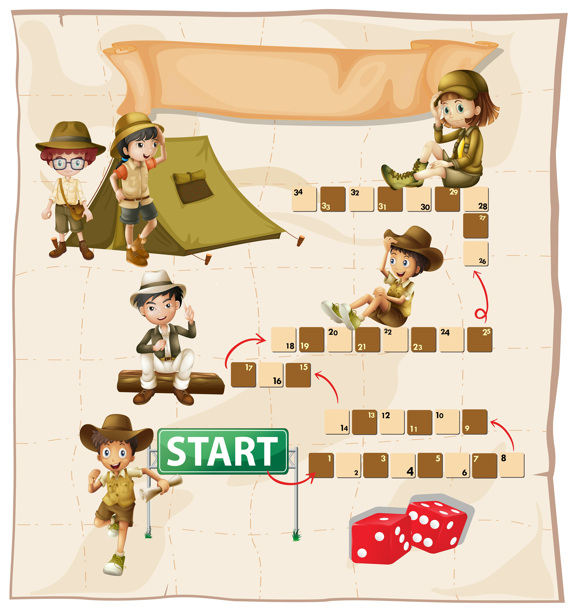

Comprehensive Guides
Explore detailed walkthroughs for your favorite games, complete with strategies, hidden secrets, and full game breakdowns.
Developer Insights

Get behind-the-scenes access to game development with our exclusive interviews and production documentation.
Historical Analysis

Discover how games have evolved with our comprehensive historical documentation of genres, mechanics, and industry trends.